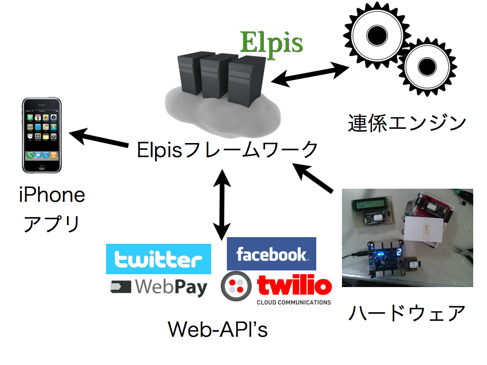

Elpis 利用シーン [2013/08/01]¶
§0 本資料について¶
本資料は、ArtifactNoiseが制作した資料であり、一部開発中の物も含まれている場合があります。
最新の情報、ご質問等は info@ArtifactNoise.com までご連絡ください。
§1 Elpis とは何ですか？¶
Elpisとは、ArtifactNoiseが制作した「Webとハードウェアをシームレスに繋げる為のフレームワーク」です。
本資料では、Elpisを利用する事により、何が出来るのかを紹介したいと思います。
Elpisの技術的な内容に関しては、 http://elpis.artifactnoise.com/elpis/top/index.html に記載してあります。

§2 Elpisの利用シーン（想定事例）¶
Elpisを利用したシーンの想定を以下の項目でまとめました。
以下の内容は想定された内容であり、実際と異なる場合が御座いますので、
確認の際は info@artifactnoise.com までご連絡ください。
① 人を引き寄せる新しいコンテンツの提案¶
Elpisは、ハードウェアを操作する上で非常に便利なフレームワークであり、Elpisを使う事により来場者にハードウェアを操作して頂く事によりワクワク感を提供する事が出来ます。
例えば、実店舗にロボットを設置し、『ロボットとお手持ちのiPhoneやAndroidでその店舗の情報や質問をロボットが答える』と言ったサービスをElpisの技術を使い実現する事が出来ます。
また、ロボットを日本各地に設置する状況がある際も、インターネットへ接続出来る環境さえあればどの地域でも同じサービスを提供する事が出来ます。
Elpisにはデーターベースもあり、ユーザーがどのような操作を行ったのか記録を取る事が出来ます。そのため、来場者が何にお困りなのかと言った情報等もフィードバックする形でご提供出来ます。
{kind=link}
② 既存のハードウェアに付加価値を付ける提案¶
ElpisはハードウェアをWebに繋げるだけではなく、Elpisに繋げられたハードウェアの情報管理も行っています。
既存のハードウェアにElpisの仕組みを追加する事により、そのハードウェアがオンライ状態かどうかを確認する事が出来ます。 また、ハードウェアから得られる情報（センサーの値や現在のステータス情報)をElpisを通してWEBで管理する事が出来ます。
現在注目されている「スマートグリッド」、「センサーネットワーク」等、センサーの値を常時記録しブラウザで表示したりするサービスに、Elpisは得意としています。
{kind=link}
③ WEBと連携した新しいサービスの提案¶
ElpisはハードウェアをWEB-APIとして提供できます。そのため、多くのWEBサービスと提携する事ができます。 ElpisではWebとの連携に関して積極的に提案を行っています。現在以下の提案を想定していますが、この想定以外の提案に関しても積極的に取り組んでいます。
以下の例はあくまで一例です。今後多くの例に対応すべく日々開発を行っています。
・電話API Twilioを利用した、クラウド呼び出しサービス
・決済API WebPayを利用した、レンタル商品を即座に決済するレンタルサービス
・RFIDを利用したタッチ&プリントサービス
・Twitterと電光掲示板を連携したデジタルサイネージサービス
・スマートフォンと組み合わせた照明や家電操作サービス
{kind=link}
§3 連絡先¶
本記事の内容及び技術的ご質問について info@artifactnoise.com までご連絡ください。
本技術及びアイディアを、ビジネスや企画でご活用いただける場合はお気軽にご連絡ください。
ビジネスに関するお問い合わせも、info@artifactnoise.com までご連絡ください。
§ 管理情報¶
| 初版: | 2013/08/01 |
|---|---|
| 改良: | |
| 作成者: | ArtifactNoise http://artifactnoise.com/ |
| 分類: | Elpis |
| 開発参加者: | Yuta Kitagami , Shota Koshimizu . |